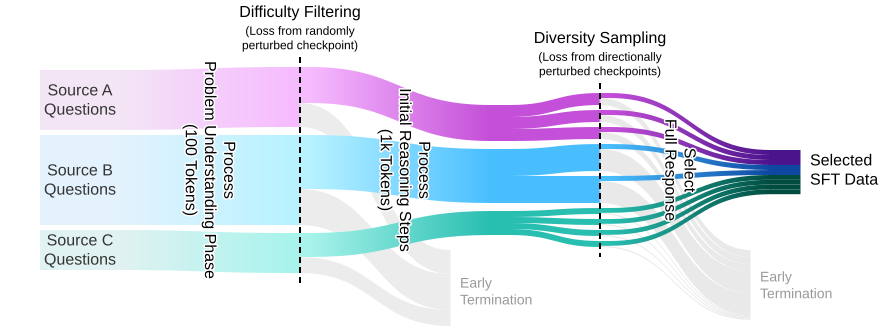
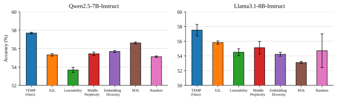
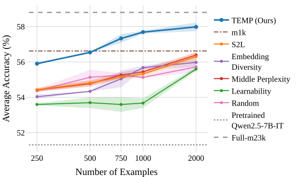
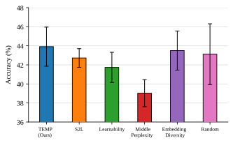
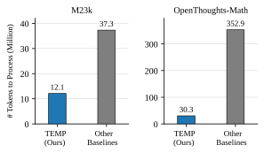

Abstract
Supervised fine-tuning (SFT) on a small, high-quality set of long reasoning traces is an effective approach for eliciting strong reasoning capabilities in Large Language Models (LLMs). However, existing methods for curating high-quality SFT data rely heavily on strong reasoning models to filter examples based on diversity and difficulty, making the curation process costly while often yielding suboptimal data quality. In this work, we show that diverse and challenging reasoning examples can be identified using only the initial reasoning tokens. Specifically, we demonstrate that difficult problems can be reliably detected based on the loss of the first 100 reasoning tokens evaluated at a randomly perturbed checkpoint of the pretrained model. We further show that examples exhibiting similar loss patterns over their first 1k reasoning tokens across a small number of perturbed checkpoints extrapolating along the fine-tuning trajectory provably induce similar gradients. We validate our approach through extensive experiments on fine-tuning Qwen2.5-7B and Llama3.1-8B models on the M23K medical reasoning and OpenThoughts-Math datasets. Our method outperforms existing baselines by up to 1.7% while being 91% more token efficient.
Method

Overview of TEMP: Token-Efficient Model Perturbation Reasoning Data Selection. First, using only the first 100 tokens of reasoning traces, we identify challenging examples as those exhibiting higher loss at a randomly perturbed checkpoint of the pretrained model. Then, we cluster examples based on their first 1k token loss values, measured at a small number of noisy checkpoints extrapolating along the fine-tuning direction, and sample a diverse subset. The curated difficult and diverse SFT dataset enables efficient training of high-performing reasoning models.
Main Results

Our method, TEMP, outperforms all baselines when fine-tuning Qwen2.5-7B-Instruct (left) and Llama3.1-8B-Instruct (right) on 1k examples selected from the M23k medical reasoning dataset. Average accuracy is shown across 10 medical benchmarks.

Fine-tuning Qwen2.5-7B-Instruct on on the M23k medical reasoning dataset. Average accuracy of subsets of various sizes is shown across 10 medical benchmarks. TEMP outperforms baselines across different budgets.

Comparison of our method, TEMP, with baselines for fine-tuning Qwen2.5-7B-Instruct on 1k examples selected from the highly-curated OpenThoughts-Math dataset.

Token efficiency of our method (TEMP) vs baselines for selecting 1k data. While baselines requires processing the entire reasoning traces, TEMP only processes the initial tokens, improving token efficiency by 91% on the OpenThoughts-Math dataset.
BibTeX
@inproceedings{jin2026reasoning,
title={Reasoning Quality Emerges Early: Data Curation for Reasoning Models},
author={Jin, Hongyi Henry and Yang, Wenhan and Ghaffari, Meysam and Morato, Carlos and Mirzasoleiman, Baharan},
booktitle={Forty-third International Conference on Machine Learning},
year={2026},
url={https://openreview.net/forum?id=4Mu4AA14jr}
}